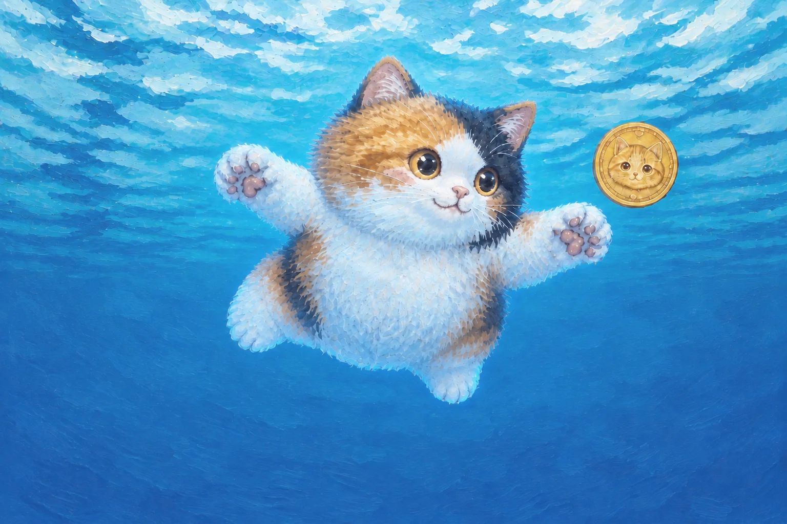
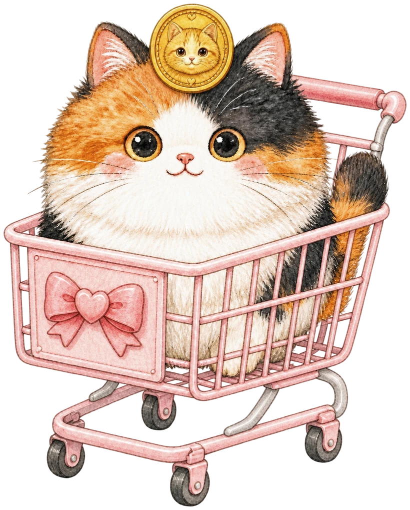

Story
Koban-chan and the gold coin
Koban-chan is a round calico cat who lives with Kato-san.
One sunny afternoon, she found something on the road: a small gold coin with a cat's face on it. She did not know what it was. But it was round, it was shiny, and it was warm from the sun. So she brought it home.
A coin for a cat
The Japanese saying neko ni koban — “gold coins to a cat” — means giving something precious to someone who cannot tell its worth.
“Koban-chan, you can't buy anything with that,” Kato-san laughed. Koban-chan did not care. She balanced the coin on her head and walked around the house, very proudly.

One day the coin slipped and fell into deep, blue water. Koban-chan jumped in after it without thinking. A cat, swimming! She caught it with both paws.

On Saturdays, Koban-chan rides in Kato-san's shopping cart. The shop is full of things a coin can buy. Koban-chan never buys anything. She would rather keep the coin.
Who decides what something is worth? To Koban-chan, it is round, shiny and warm. That is enough.
Today, anyone can make a coin. MIKENEKO COIN was born that way, too.
Today, as always, Koban-chan is napping with the coin on her head. How much it is worth, she does not know.
A coin for a cat.